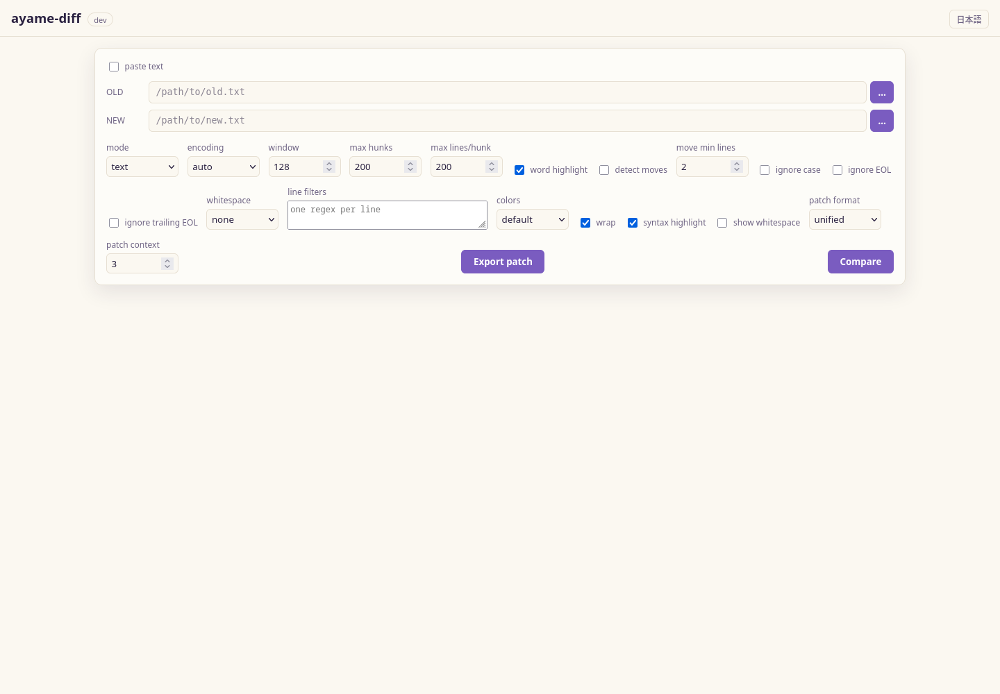

GUI¶
ayame-diffは、小さなローカルウェブアプリをバンドルしており、ターミナルの代わりにブラウザでファイルを比較できます。シングルページアプリはバイナリに埋め込まれているため、追加のインストールや外部ネットワークアクセスは必要ありません。

初回比較まではパス入力を大きく表示し、比較後は編集可能なスティッキーペインヘッダーへ置き換わります。
2つのサブコマンドで起動します：
serve— 固定のアドレス（デフォルトはlocalhost）でサーバーを起動します。gui— 空いているlocalhostのポートでサーバーを起動し、ブラウザを開きます。
ローカル・シングルユーザー専用
サーバーはブラウザで入力したファイルパスを開くため、デフォルトでlocalhostにバインドされており、あくまでご自身のローカル環境での使用を想定しています。ネットワークに公開しないでください。
loopback以外の--addrには--allow-remoteが必要で、警告が表示されます。
URLを持つ人は誰でも操作できるため、信頼できるネットワークのアクセス制御下に置いてください。
結果内の検索¶
Ctrl+F で結果に対する検索バーが開きます。一致箇所をハイライトして件数を表示し、
Enter / Shift+Enter で次/前へ移動、Esc で閉じます。トグルで「変更行のみ」に
絞り込み、大小区別、正規表現の扱いを切り替えられます。
照合は行全体のテキストに対して行うため、アンカー（$）や複数のシンタックストークンに
またがるパターンも記述どおりに動作します。行番号の桁は検索対象外なので、数字で検索しても
行番号ではなく内容に一致します。ハイライトする件数には上限があり（非常に大きな差分で
広範な検索をしても描画の分割を損なわないため）、上限に達した場合はカウンタに + が付きます。
アクセス制御¶
起動のたびにAPIトークンを生成し、すべての/api呼び出しにX-Ayame-Tokenヘッダーで
必要とします。トークンはguiが開くURL・serveが表示するURLに含まれ、ページは
sessionStorageに保持するため、通常のリロードでは動作し続けます。表示されたURLを
開いてください。新しいタブでhttp://127.0.0.1:PORT/だけを開いてもトークンがないため、
UIがその旨を表示します。
この設計から2つの性質が導かれます。
- CSRFが成立しない。 他のサイトのページはCORSプリフライトなしにカスタムヘッダーを 付けられず、このサーバーはプリフライトに応答しません。Cookieであれば自動的に送信されて しまい、保護になりませんでした。
- DNSリバインディングが成立しない。 loopbackで待ち受ける場合は
Hostヘッダーを バインドしたアドレスに固定します。自分のホスト名を127.0.0.1に解決させたページもHostにはそのホスト名を送るため、正しいトークンを持っていても拒否されます。
埋め込みページとそのアセット、/api/healthはトークンなしで開いています。ページは自身の
サブリソースにヘッダーを付けられず、起動コマンドはブラウザが存在する前に死活確認として
healthを叩くためです。いずれもユーザーのデータを露出しません。
--allow-remoteのリスナーはHostを固定しません。到達しうる名前をここでは知りえない
ためで、その場合はトークンが防御になります。
serve¶
ウェブUIを起動し、Ctrl+Cで停止するまで動作し続けます。
ayame-diff serve # http://127.0.0.1:8080
ayame-diff serve --addr 127.0.0.1:9000
ayame-diff serve --addr 0.0.0.0:8080 --allow-remote
| フラグ | デフォルト | 意味 |
|---|---|---|
--addr |
127.0.0.1:8080 |
受信アドレス（host:port）。 |
--allow-remote |
オフ | loopback以外の受信アドレスを明示的に許可します。APIトークンは有効ですが、Hostの固定は行いません。 |
gui¶
serveと同じUIですが、空いているlocalhostのポートを選び、デフォルトのブラウザを起動します — ネイティブのWebView依存なしで「ダブルクリックしてGUIへ」体験を提供します。
| フラグ | デフォルト | 意味 |
|---|---|---|
--addr |
127.0.0.1:0 |
受信アドレス；ポート0は空いているポートを自動選択します。 |
--allow-remote |
オフ | loopback以外の受信アドレスを明示的に許可します。APIトークンは有効ですが、Hostの固定は行いません。 |
--no-open |
オフ | サーバーを起動しますが、ブラウザは開きません。 |
ウェブUIの使い方¶
LEFTとRIGHTのファイルパス（またはサーバー側のファイルピッカーを使用）を入力し、モード（text、sorted、またはcsv / tsv）とオプション（エンコーディング、再同期ウィンドウ、ケース無視、空白文字処理、EOL制御、行ごとに入力する正規表現フィルター、sortedの場合は数値/逆順ソート）を選択して、比較をクリックします。結果は、行番号や単語レベルのハイライト付きのサイドバイサイドグリッドとして表示されます。パッチ形式（normal、context、unified）とコンテキスト行数を選び、パッチのエクスポートを使って適用可能なayame.patchをダウンロードします。パッチのエクスポートはCRLFや最後の改行マーカーを保持し、バイナリやNUL入力は拒否します。エクスポートはtextモードのみ対応；sortedビューのパッチは安全に元のファイルに適用できません。
結果が表示されると、初回用のパス入力レールは作業領域から消えます。各スティッキー
ペインヘッダーには、側の識別子、編集可能なパス、サーバー側ファイル参照ボタン、
取得できる場合は検出文字コードと行数が表示されます。編集後にEnterを押すか
フォーカスを外すと、その片側を差し替えて即座に再比較します。⇄でLEFT/RIGHTを
入れ替えられます。再比較後は先頭へ戻らず、直前に見ていた論理行を復元します。
外部変更¶
ファイルを使うtext、sorted、csv / tsv、3-way比較では、表示メニューの
外部変更を自動反映がデフォルトで有効です。別のエディタで比較対象を保存すると、
短時間の複数writeやアトミック保存を1回にまとめて再比較し、同じ論理行を同じ画面内
位置へ復元します。
ブラウザは認証済みfetchの長期ポーリングを使うため、監視リクエストにも他の
ファイルシステムAPIと同じX-Ayame-Tokenが付きます。監視対象はBASE/LEFT/RIGHTの
最大3パスで、ページ・パス・モード・設定が変わると未完了リクエストを中止します。
将来の直接編集で未保存変更がある場合は勝手に置き換えず、再読み込みまたは
現在の編集を保持を選ぶバーを表示します。
貼り付けテキストには監視するファイルがありません。フォルダ比較も手動のままです。 任意サイズのツリーを保存のたびに再帰走査すると、リソース上限を保証できないためです。 フォルダ結果から変更ファイルをテキスト比較として開いた後は、そのファイルペアを通常どおり 監視します。
比較URLとブラウザ履歴¶
ファイルを使う比較が成功すると、GUIは入力パス、モード、比較条件をバージョン付きの URLフラグメントへ保存します。再読み込み時は同じ状態を復元して自動比較します。 異なる入力の比較は履歴を追加し、条件変更は現在の履歴を置き換えるため、戻る・進むで 比較状態ごと移動できます。
フラグメントはサーバーへ送信されませんが、ローカルパスを含みます。結果ツールバーの リンクをコピーはこの点を警告し、APIトークンを除いたURLをコピーします。 コピーしたURLだけではアクセス権を付与しません。受け取った側では、先にayame-diffを 通常どおり開き、そのブラウザセッション自身のトークンを用意してください。
貼り付けたスクラッチテキストは意図的に対象外です。URL状態の上限は32 KiBです。
非常に多いCSV列選択は.ayamediffプロジェクトへ保存してください。
適用された無視設定は結果のサマリーに表示されます。これらはマッチングにのみ影響し、レンダリングされた行やエクスポートされたパッチは元のテキストを保持します。
ブラウザからドロップしたファイルは、非公開のローカルキャッシュへコピーされます。 上限は1ファイル2 GiB、1ブラウザセッション8 GiBです。超過時は明確なHTTP 413 エラーを返し、途中まで作成した一時ファイルを削除します。孤立したセッションキャッシュは 24時間後、後続セッションの開始時にクリーンアップ対象になります。
差分のナビゲーション¶
スティッキーなナビゲーションバーは最初、前、次、最後のハンクにジャンプし、現在/合計、未読数を表示します。キーボードショートカットはAlt+Down、Alt+Up、Alt+End、Alt+Homeです；?ボタンでUI内のこのリストを表示します。右側のロケーションバーはハンクのインデックスからマーカーを直接描画し、クリックでジャンプ可能、現在のビューポートを重ねて表示します。左右のテキストは縦横ともに同期されており、各ハンクは共有グリッドとスクロール行としてレンダリングされるため、2つの独立したペインではありません。
動き検出を有効にすると、正確な削除/挿入ブロックをペアリングします。移動したハンクは紫色の専用色と↔ボタンでペアの位置にジャンプします。検出はデフォルトでオフ；最小移動行数とエンジンの候補キャップにより、大規模比較の後処理が過剰にならないよう制御します。
手動による整列と無視差分¶
自動再同期が誤った行を選択した場合、両側の行を1つずつクリックし、同期追加を選択します。同期ポイントは差分を独立した区間に分割し、LEFT:RIGHTのリムーバブルなチップとしてリストされ、即座に再計算されます。ポイントは両側とも増加する必要があり、APIとCLIは範囲と順序を検証します。CLIの同等コマンドは--sync 100:120のように1ベースの行番号を使用します。
各ハンクにはこの差分を無視もあります。無視されたハンクは折りたたまれた破線のヘッダーとして表示され、次/前のナビゲーションや未読数から除外され、復元も可能です。パッチエクスポートはこれらを省略し、X-Ayame-Ignored-Hunksレスポンスヘッダーに無視されたハンクの数を記録します。これにより、非表示の決定も監査可能です。永続的なルールには宣言的な行フィルター（#28）を使用してください。
CSV / TSV設定とテーブル結果¶
csv / tsvを選択し、ヘッダーの検査をクリックします。サーバーは最初の論理レコードのみを読み取り、検出されたフォーマット/パーサと整列された列を報告します。検索可能な列リストは、すべての列、選択キー、除外キーのモードと、「すべて選択」「反転」をサポートします。パース設定、区切り文字、互換性、無視、許容範囲、リソース、一時ストレージ、出力設定も同じ画面で調整可能です；設定の確認は実行結果の概要を示します。
結果は100論理差分ごとにページ分割されます。変更されたセルだけが修正色で表示され、ヘッダーバッジは列ごとの変更数を示します。変更された列のみは広い未変更列を隠します。サーバーはブラウザの応答を5,000論理差分に制限します；実行とエクスポートは完全なTSV（_changed_cols付き）またはJSON Lines形式の結果をローカルに保存します。
詳細はGUI設定の到達可能性と配置方針を参照してください。 高度な設定への経路を維持しながら、エンジンの全オプションを結果画面へ常設しないための 規則も記載しています。
フォルダ比較¶
folder モードは、インクルード/エクスクルード glob、隠しファイル方針、並列ワーカー数、
5種類の比較方法、名前付きフィルタファイル/セット、メタデータの論理フィルタ式を
受け付けます。フィルタをプレビューは内容比較前に選択件数とパス例を示します。
フォルダ設定はポータブルな .ayamediff.json プロジェクトへ保存できます。結果は
ステータスフィルター付きのインデントされた色分けツリーです。変更されたファイルを
クリックするとテキストモードに切り替わり、対応する相対パスを開きます。
シンボリックリンクはスキップされ、.gz ファイルは展開内容で比較されます。
HTTP API¶
GUIは小さなJSON APIを通じた薄いクライアントです。直接呼び出すことも可能です。
GET /¶
埋め込み済みのシングルページアプリを提供します。
GET /api/health¶
POST /api/diff¶
リクエストボディ：
{
"old": "old.txt",
"new": "new.txt",
"mode": "text",
"encoding": "auto",
"window": 128,
"maxHunks": 200,
"maxLines": 200,
"numeric": false,
"reverse": false,
"ignoreCase": false,
"whitespace": "none"
}
| フィールド | 型 | 備考 |
|---|---|---|
old, new |
文字列 | 比較するファイルパス。 |
mode |
文字列 | text（デフォルト）またはsorted。 |
encoding |
文字列 | --encodingと同じ値。 |
window |
数値 | 再同期ウィンドウ（0の場合は128のデフォルト）。 |
maxHunks |
数値 | 返される最大ハンク数（0以下は200のデフォルト）。 |
maxLines |
数値 | 1ハンクあたりの最大行数（0の場合は200のデフォルト）。 |
numeric, reverse |
ブール | ソート制御、sortedモード時に使用。 |
ignoreCase |
ブール | 比較時にケースを無視。 |
whitespace |
文字列 | none、change、allのいずれか。 |
syncPoints |
配列 | 0ベースの{ "old": N, "new": N }の強制対応点。 |
ignoredHunks |
配列 | パッチ/レポート出力から除外されたハンクのインデックス。 |
成功時のレスポンス：
{
"old_lines": 120,
"new_lines": 118,
"hunks": [
{
"kind": "Replace",
"old_start": 10,
"old_len": 2,
"new_start": 10,
"new_len": 1,
"old": ["行 a", "行 b"],
"new": ["行 A"]
}
],
"hunk_count": 1,
"omitted_hunks": 0,
"added": 0,
"deleted": 1,
"modified": 1
}
各ハンクのkindはInsert、Delete、Replaceのいずれかで、old/new配列に影響行が格納されます（maxLinesにより側ごとに制限）。移動検出を要求したもののハンク省略により完全な結果を出せない場合は、move_detection_skipped: trueが追加されます。エラーはHTTP 4xxステータスとともにJSON本文で返されます。
リクエスト例¶
curl -s http://127.0.0.1:8080/api/diff \
-H 'Content-Type: application/json' \
-d '{"old":"old.txt","new":"new.txt","mode":"text","ignoreCase":true,"whitespace":"change"}'
POST /api/patch¶
/api/diffと同じパス、インラインテキスト、モード、エンコーディング、比較フィールドを受け取り、追加で：
レスポンスはtext/x-diffで、Content-Disposition: attachment付きです。対応可能なフォーマットはnormal、context、unifiedで、contextは非負で省略時は3です。
CSVとファイルAPI¶
GET /api/files?path=...：ローカルディレクトリのエントリを最大2,000件リストアップ（設定ファイルピッカー用）。POST /api/watch：1〜3個のファイルパスと任意の前回baselineを受け取ります。 baselineなしでは現在のsnapshotを即時返し、指定時はサイズ・更新時刻・モードが変わるか 20秒経過するまで待ちます。返されたsnapshotを次のbaselineとして再送します。 1リクエストが無制限の再帰走査を意味しないよう、ディレクトリは拒否します。POST /api/csv/inspect：CSV設定JSONを受け取り、データ行をスキャンせずに最初のレコードのスキーマを検査。POST /api/csv/diff：完全な比較を実行し、ヘッダー、サマリー/ランキング、最大maxRowsの論理JSONセル差分（デフォルトは500、最大5,000）を返す。POST /api/csv/export：同じリクエストにoutput、outputFormat（tsvまたはjsonl）、outputHeaderを追加し、完全なローカル結果を書き出す。
これらのエンドポイントは意図的にローカルパスを受け付けており、GUIの他の部分と同じくローカル・シングルユーザー利用と明示的なリモートモードの警告が適用されます。